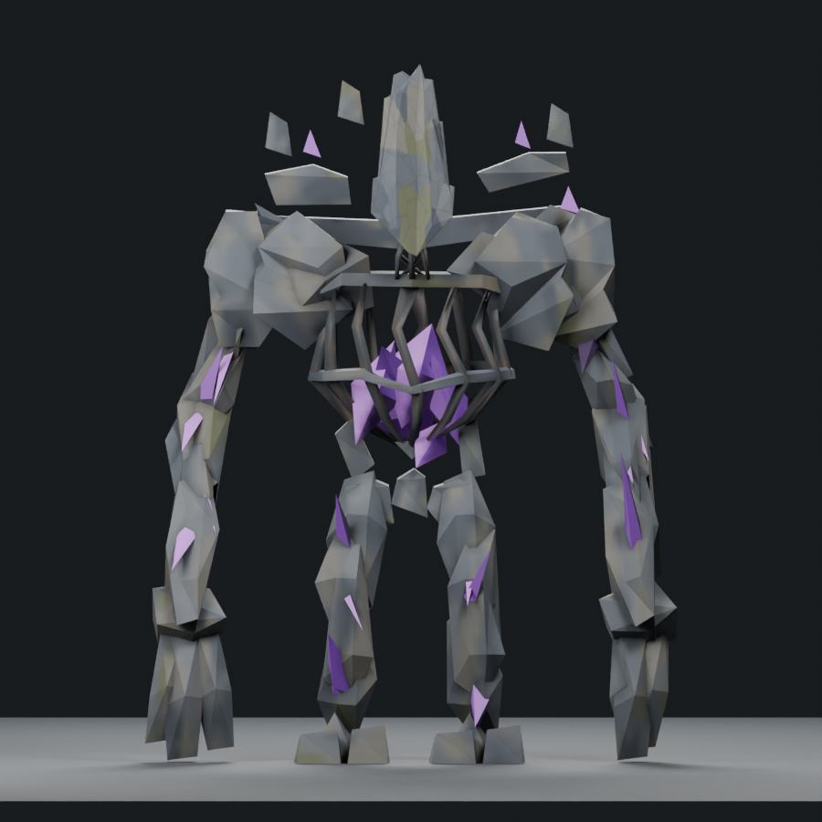
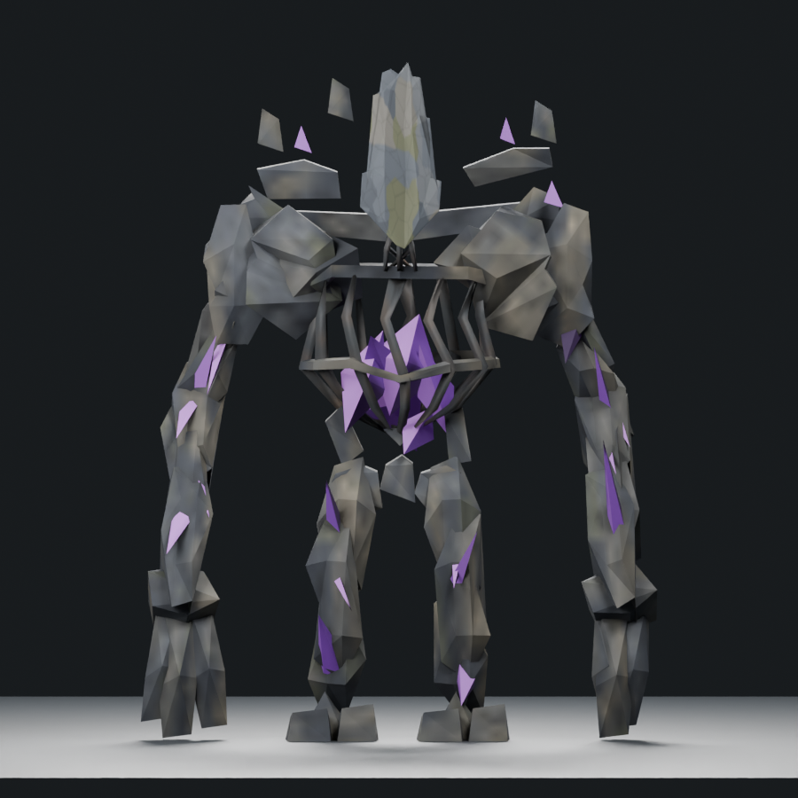
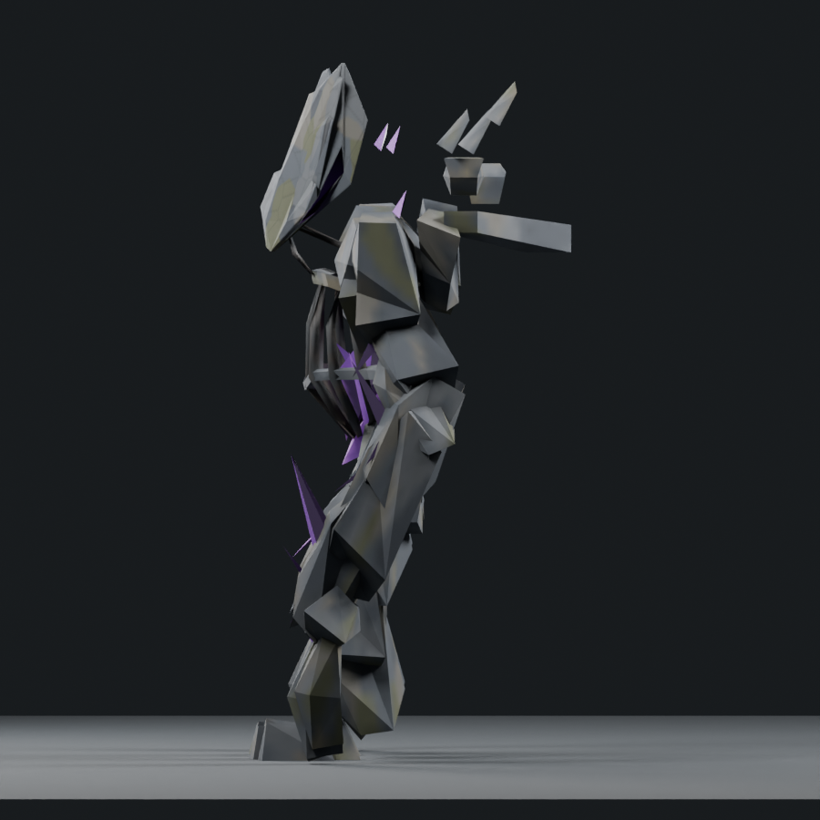
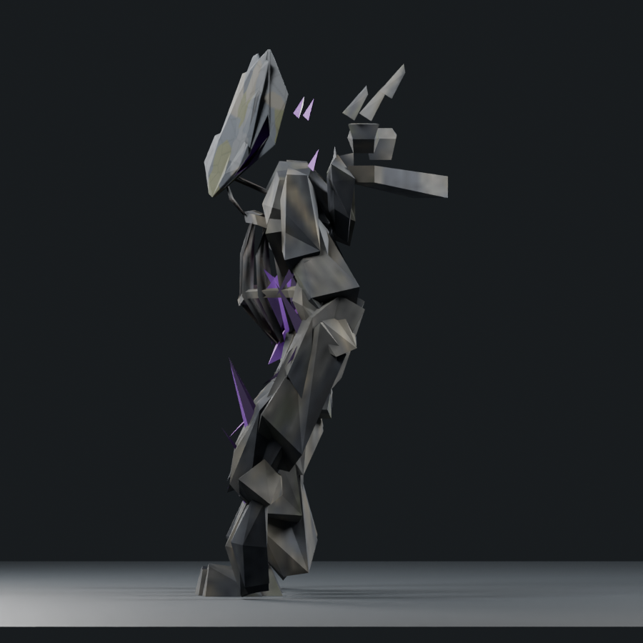

Intermediate editable study. Not installed, not accepted. The new study does not change the 1/6 adequate-boss tally.
Portable skinned model · Blender source · Review findings · Geometry/pose support proof · 48-entity ledger
1,800 triangles / measured native donor 1,200 / soft cap 1,800; one mesh/material, four packed 512px maps.
Original committed concept, unaltered. Previous model comparisons use the exact current cameras and lighting.




four leaner staggered outer mantle plates with long front ridges and reduced rear depth, finer discrete stone chips, dark long seams and sparse upward olive lichen
The unchanged inner mantle remains too bulky and faceted. The upper cage, core and rear architecture still lack the concept-specific layered structure. Body stone remains coarse at full view and needs authored chips and deliberate lichen. The head/neck geometry is preserved; no new whole-boss acceptance is inferred.
Offline manifold topology, skin weights, atlas, export and sampled supports pass. These checks do not establish appearance, animation quality, runtime admission or live performance.